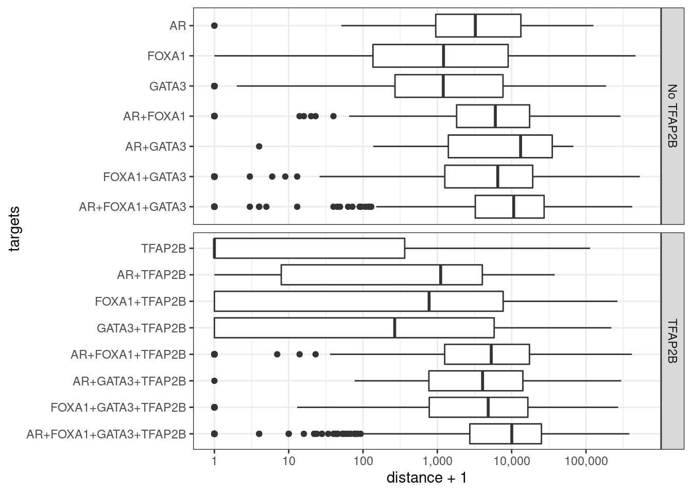
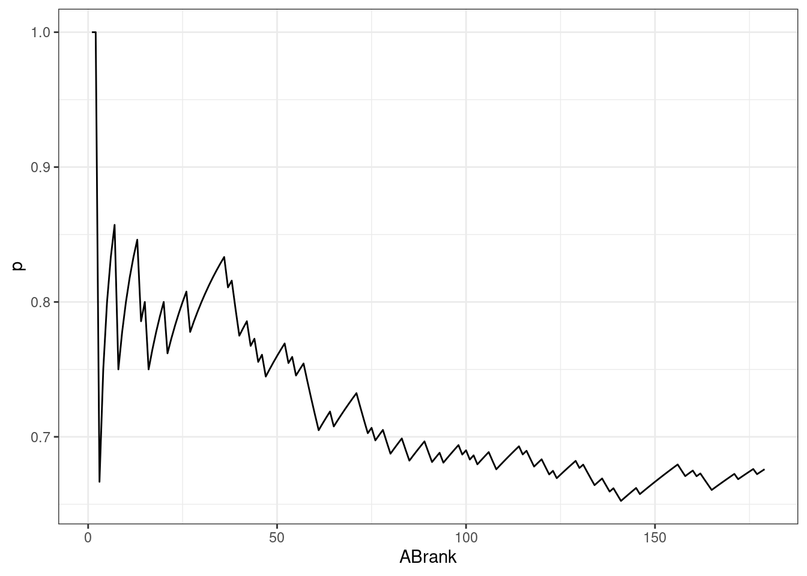
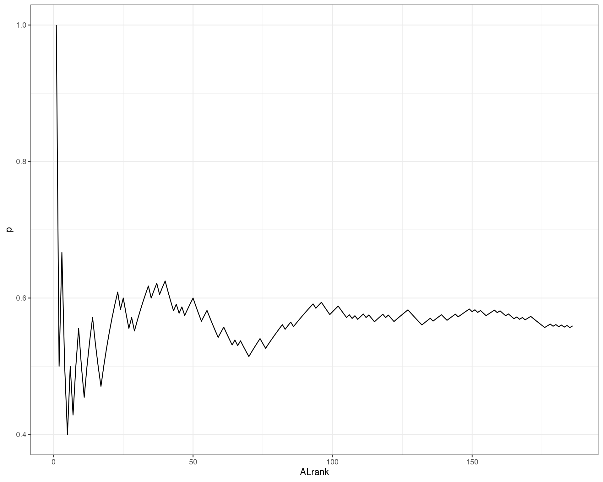

Comparison of all ChIP Targets
Stephen Pederson
13 May, 2022
Last updated: 2022-05-13
Checks: 7 0
Knit directory:
apocrine_signature_mdamb453/
This reproducible R Markdown analysis was created with workflowr (version 1.7.0). The Checks tab describes the reproducibility checks that were applied when the results were created. The Past versions tab lists the development history.
Great! Since the R Markdown file has been committed to the Git repository, you know the exact version of the code that produced these results.
Great job! The global environment was empty. Objects defined in the global environment can affect the analysis in your R Markdown file in unknown ways. For reproduciblity it’s best to always run the code in an empty environment.
The command set.seed(20220427) was run prior to running
the code in the R Markdown file. Setting a seed ensures that any results
that rely on randomness, e.g. subsampling or permutations, are
reproducible.
Great job! Recording the operating system, R version, and package versions is critical for reproducibility.
Nice! There were no cached chunks for this analysis, so you can be confident that you successfully produced the results during this run.
Great job! Using relative paths to the files within your workflowr project makes it easier to run your code on other machines.
Great! You are using Git for version control. Tracking code development and connecting the code version to the results is critical for reproducibility.
The results in this page were generated with repository version 9288752. See the Past versions tab to see a history of the changes made to the R Markdown and HTML files.
Note that you need to be careful to ensure that all relevant files for
the analysis have been committed to Git prior to generating the results
(you can use wflow_publish or
wflow_git_commit). workflowr only checks the R Markdown
file, but you know if there are other scripts or data files that it
depends on. Below is the status of the Git repository when the results
were generated:
Ignored files:
Ignored: .Rhistory
Ignored: .Rproj.user/
Ignored: analysis/figure/
Ignored: data/bigwig/
Note that any generated files, e.g. HTML, png, CSS, etc., are not included in this status report because it is ok for generated content to have uncommitted changes.
These are the previous versions of the repository in which changes were
made to the R Markdown (analysis/comparison.Rmd) and HTML
(docs/comparison.html) files. If you’ve configured a remote
Git repository (see ?wflow_git_remote), click on the
hyperlinks in the table below to view the files as they were in that
past version.
| File | Version | Author | Date | Message |
|---|---|---|---|---|
| Rmd | 9288752 | Steve Pederson | 2022-05-13 | Added 95% CIs for targets |
| Rmd | 1582607 | Steve Pederson | 2022-05-12 | Started looking at H3K27ac |
| Rmd | 8217e8a | Steve Pederson | 2022-05-10 | Started explorations |
| html | 8217e8a | Steve Pederson | 2022-05-10 | Started explorations |
Introduction
library(tidyverse)
library(magrittr)
library(extraChIPs)
library(plyranges)
library(pander)
library(scales)
library(reactable)
library(htmltools)
library(UpSetR)
library(rtracklayer)
library(GenomicInteractions)
library(multcomp)
theme_set(theme_bw())dht_peaks <- here::here("data", "peaks") %>%
list.files(recursive = TRUE, pattern = "oracle", full.names = TRUE) %>%
sapply(read_rds, simplify = FALSE) %>%
lapply(function(x) x[["DHT"]]) %>%
lapply(setNames, nm = c()) %>%
setNames(str_extract_all(names(.), "AR|FOXA1|GATA3|TFAP2B"))
dht_consensus <- dht_peaks %>%
lapply(granges) %>%
GRangesList() %>%
unlist() %>%
reduce() %>%
mutate(
AR = overlapsAny(., dht_peaks$AR),
FOXA1 = overlapsAny(., dht_peaks$FOXA1),
GATA3 = overlapsAny(., dht_peaks$GATA3),
TFAP2B = overlapsAny(., dht_peaks$TFAP2B),
)
targets <- names(dht_peaks)
sq <- seqinfo(dht_consensus)Relationship Between Binding Regions
Oracle peaks from the DHT-treated samples in each ChIP target were obtained previously using the GRAVI workflow. AR and GATA3 peaks were derived from the same samples/passages, whilst FOXA1 and TFAP2B ChIP-Seq experiments were performed separately.
cp <- htmltools::tags$em(
"Summary of all oracle peaks from DHT-treated samples. FOXA1 clearly showed the most binding activity."
)
tbl <- dht_peaks %>%
lapply(
function(x) {
tibble(
n = length(x),
w = median(width(x)),
kb = sum(width(x)) / 1e3
)
}
) %>%
lapply(list) %>%
as_tibble() %>%
pivot_longer(cols = everything(), names_to = "target") %>%
unnest(everything()) %>%
reactable(
filterable = FALSE, searchable = FALSE,
columns = list(
target = colDef(name = "ChIP Target"),
n = colDef(name = "Total Peaks"),
w = colDef(name = "Median Width"),
kb = colDef(name = "Total Width (kb)", format = colFormat(digits = 1))
),
defaultColDef = colDef(
format = colFormat(separators = TRUE, digits = 0)
)
)
div(class = "table",
div(class = "table-header",
div(class = "caption", cp),
tbl
)
)A set of target-agnostic set of binding regions was then defined as the union of all DHT-treat peaks across all targets.
dht_consensus %>%
as_tibble() %>%
pivot_longer(cols = all_of(targets), names_to = "target", values_to = "bound") %>%
dplyr::filter(bound) %>%
split(.$target) %>%
lapply(pull, "range") %>%
fromList() %>%
upset(
sets = rev(targets), keep.order = TRUE,
order.by = "freq",
set_size.show = TRUE, set_size.scale_max = nrow(.)
)
Using the union of all binding regions, those which overlapped an oracle peak from each ChIP target are shown
| Version | Author | Date |
|---|---|---|
| 8217e8a | Steve Pederson | 2022-05-10 |
H3K27ac Signal
Given the hypothesis that the co-ocurrence of all 4 ChIP targets should be associated with increased transcriptional or regulatory activity, the set of all DHT peaks were then compared to promoters and enahncers derived H2K27ac binding, as detected in the existing GATA3/AR dataset produced by Leil Hosseinzadeh. Any H3K27ac peak detected in this dataset was classified either as a promoter or enhancer, and thus these features can be considered as the complete set of regions with detectable H3K27ac signal from this experiment.
features <- here::here("data", "h3k27ac") %>%
list.files(full.names = TRUE, pattern = "bed$") %>%
sapply(import.bed, seqinfo = sq) %>%
lapply(granges) %>%
setNames(basename(names(.))) %>%
setNames(str_remove_all(names(.), "s.bed")) %>%
GRangesList() %>%
unlist() %>%
names_to_column("feature") %>%
sort()grp_h3k27ac <- dht_consensus %>%
mutate(h3k27ac = overlapsAny(., features)) %>%
as_tibble() %>%
dplyr::select(range, all_of(targets), h3k27ac) %>%
pivot_longer(cols = all_of(targets), names_to = "targets") %>%
dplyr::filter(value) %>%
group_by(range, h3k27ac) %>%
summarise(targets = paste(targets, collapse = "+"), .groups = "drop")
glm_h3k27ac <- glm(h3k27ac ~ 0 + targets, family = "binomial", data = grp_h3k27ac)inv.logit <- binomial()$linkinv
glm_h3k27ac %>%
glht() %>%
confint() %>%
.[["confint"]] %>%
as_tibble(rownames = "targets") %>%
mutate(
n_targets = str_count(targets, "_") + 1,
targets = fct_inorder(targets) %>%
fct_relabel(str_remove_all, pattern = "targets"),
p = inv.logit(Estimate),
TFAP2B = ifelse(str_detect(targets, "TFAP2B"), "TFAP2B", "No TFAP2B"),
across(all_of(c("upr", "lwr")), inv.logit)
) %>%
ggplot(aes(p, targets)) +
geom_point() +
geom_errorbarh(aes(xmin = lwr, xmax = upr), height = 0.4, colour = "grey20") +
facet_grid(TFAP2B ~ ., scales = "free_y") +
labs(x = "Probability of Feature Overlap", y = "Detected Targets")
Family-wise 95% Confidence Intervals for the probability of overlapping an H3K27ac-derived feature, based on the combinations of detected ChIP targets.
Comparison With H3K27ac HiChIP Data
To perform this step, externally-sourced data defining promoters & enhancers (H3K27ac ChIP-Seq), and H3K27ac-HiChIP obtained from SRA and analysed previously, were included. The H3K27ac-derived features were obtained from the same passages/experiments as GATA3 and AR. Conversely, the HiChIP data was obtained from a public dataset, not produced with the DRMCRL. HiChIP interactions were obtained using only the Vehicle controls from an Abemaciclib Vs. Vehicle experiment.
fl <- here::here("data", "hichip") %>%
list.files(full.names = TRUE, pattern = "gi.+rds")
hic <- GInteractions()
for (f in fl) {
hic <- c(hic, read_rds(f))
}
hic <- sort(hic)Before proceeding, the comparability of the H3K27ac-HiChIP and H3K27ac-derived features was checked. 93% of HiChIP long-range interactions overlapped a promoter or enhancer derived from H3K27ac ChIP-seq. Conversely, 86% or ChIP-Seq features mapped to a long-range interaction.
Mapping To Genes
all_gr <- here::here("data", "annotations", "all_gr.rds") %>%
read_rds()
rnaseq <- here::here("data", "rnaseq", "dge.rds") %>%
read_rds()
counts <- here::here("data", "rnaseq", "counts.out.gz") %>%
read_tsv(skip = 1) %>%
dplyr::select(Geneid, ends_with("bam"))
detected <- counts %>%
pivot_longer(
cols = ends_with("bam"), names_to = "sample", values_to = "counts"
) %>%
mutate(detected = counts > 0) %>%
group_by(Geneid) %>%
summarise(detected = mean(detected) > 0.25, .groups = "drop") %>%
dplyr::filter(detected) %>%
pull("Geneid")In order to more accurately assign genes to actively transcribed genes, the RNA-Seq dataset generated in 2013 studying DHT Vs. Vehicle in MDA-MB-453 cells was used. All 21,328 genes with >1 read in at least 1/4 of the samples was considered to be detected, and peaks were only mapped to detected genes.
dht_consensus <- mapByFeature(
dht_consensus,
genes = subset(all_gr$gene, gene_id %in% detected),
prom = subset(features, feature == "promoter"),
enh = subset(features, feature == "enhancer"),
gi = hic
)
all_targets <- dht_consensus %>%
as_tibble() %>%
dplyr::filter(if_all(targets)) %>%
unnest(everything()) %>%
distinct(gene_id) %>%
pull("gene_id")92% of detected genes had one or more peaks mapped to them.
Looking specifically at the peaks for which all four targets directly overlapped, 10,743 of the 21,328 detected genes were mapped to at least one directly overlapping binding region.
Apocrine Enrichment
hgnc <- read_csv(
here::here("data", "external", "hgnc-symbol-check.csv"), skip = 1
) %>%
dplyr::select(Gene = Input, gene_name = `Approved symbol`)
apo_ranks <- here::here("data", "external", "ApoGenes.txt") %>%
read_tsv() %>%
left_join(hgnc) %>%
left_join(
as_tibble(all_gr$gene) %>%
dplyr::select(gene_id, gene_name),
by = "gene_name"
) %>%
dplyr::select(starts_with("gene_"), ends_with("rank")) %>%
dplyr::filter(!is.na(gene_id))The Apocrine genes and ranks from Farmer et al were loaded, updating gene names using the latest release from HGNC. 10,669 of the original genes were able to be mapped to gene identifiers matching Gencode release 33.
Apocrine Ranks
- Need to cut by H3K27Ac
- Check UpSet plot by promoter/enhancer/detected genes
For the purposes of simple exploration, the provided list was sorted
by apo_rank and the proportion of genes mapped to at least
one set of overlapping peaks was compared to these ranks.
apo_ranks %>%
arrange(apo_rank) %>%
mutate(
all = gene_id %in% all_targets,
n = cumsum(all),
p = n / apo_rank
) %>%
ggplot(aes(apo_rank, p)) +
geom_line() +
coord_cartesian(xlim= c(0, 1000), ylim = c(0.6, 1))
| Version | Author | Date |
|---|---|---|
| 8217e8a | Steve Pederson | 2022-05-10 |
AB Ranks
The same approach was applied to AB ranks
apo_ranks %>%
dplyr::filter(!is.na(ABrank)) %>%
arrange(ABrank) %>%
mutate(
ABrank = seq_along(ABrank),
all = gene_id %in% all_targets,
n = cumsum(all),
p = n / ABrank
) %>%
ggplot(aes(ABrank, p)) +
geom_line() 
| Version | Author | Date |
|---|---|---|
| 8217e8a | Steve Pederson | 2022-05-10 |
AL Ranks
The same approach was applied to AL ranks
apo_ranks %>%
dplyr::filter(!is.na(ALrank)) %>%
arrange(ALrank) %>%
mutate(
ALrank = seq_along(ALrank),
all = gene_id %in% all_targets,
n = cumsum(all),
p = n / ALrank
) %>%
ggplot(aes(ALrank, p)) +
geom_line() 
| Version | Author | Date |
|---|---|---|
| 8217e8a | Steve Pederson | 2022-05-10 |
sessionInfo()R version 4.2.0 (2022-04-22)
Platform: x86_64-pc-linux-gnu (64-bit)
Running under: Ubuntu 20.04.4 LTS
Matrix products: default
BLAS: /usr/lib/x86_64-linux-gnu/blas/libblas.so.3.9.0
LAPACK: /usr/lib/x86_64-linux-gnu/lapack/liblapack.so.3.9.0
locale:
[1] LC_CTYPE=en_AU.UTF-8 LC_NUMERIC=C
[3] LC_TIME=en_AU.UTF-8 LC_COLLATE=en_AU.UTF-8
[5] LC_MONETARY=en_AU.UTF-8 LC_MESSAGES=en_AU.UTF-8
[7] LC_PAPER=en_AU.UTF-8 LC_NAME=C
[9] LC_ADDRESS=C LC_TELEPHONE=C
[11] LC_MEASUREMENT=en_AU.UTF-8 LC_IDENTIFICATION=C
attached base packages:
[1] stats4 stats graphics grDevices utils datasets methods
[8] base
other attached packages:
[1] multcomp_1.4-19 TH.data_1.1-1
[3] MASS_7.3-56 survival_3.2-13
[5] mvtnorm_1.1-3 GenomicInteractions_1.30.0
[7] InteractionSet_1.24.0 rtracklayer_1.56.0
[9] UpSetR_1.4.0 htmltools_0.5.2
[11] reactable_0.2.3 scales_1.2.0
[13] pander_0.6.5 plyranges_1.16.0
[15] extraChIPs_1.0.0 SummarizedExperiment_1.26.1
[17] Biobase_2.56.0 MatrixGenerics_1.8.0
[19] matrixStats_0.62.0 GenomicRanges_1.48.0
[21] GenomeInfoDb_1.32.1 IRanges_2.30.0
[23] S4Vectors_0.34.0 BiocGenerics_0.42.0
[25] BiocParallel_1.30.0 magrittr_2.0.3
[27] forcats_0.5.1 stringr_1.4.0
[29] dplyr_1.0.9 purrr_0.3.4
[31] readr_2.1.2 tidyr_1.2.0
[33] tibble_3.1.7 ggplot2_3.3.6
[35] tidyverse_1.3.1 workflowr_1.7.0
loaded via a namespace (and not attached):
[1] utf8_1.2.2 tidyselect_1.1.2 RSQLite_2.2.14
[4] AnnotationDbi_1.58.0 htmlwidgets_1.5.4 grid_4.2.0
[7] scatterpie_0.1.7 munsell_0.5.0 codetools_0.2-18
[10] withr_2.5.0 colorspace_2.0-3 filelock_1.0.2
[13] highr_0.9 knitr_1.39 rstudioapi_0.13
[16] ggside_0.2.0.9990 labeling_0.4.2 git2r_0.30.1
[19] GenomeInfoDbData_1.2.8 polyclip_1.10-0 farver_2.1.0
[22] bit64_4.0.5 rprojroot_2.0.3 vctrs_0.4.1
[25] generics_0.1.2 xfun_0.31 biovizBase_1.44.0
[28] csaw_1.30.0 BiocFileCache_2.4.0 R6_2.5.1
[31] doParallel_1.0.17 clue_0.3-60 locfit_1.5-9.5
[34] AnnotationFilter_1.20.0 bitops_1.0-7 cachem_1.0.6
[37] DelayedArray_0.22.0 assertthat_0.2.1 vroom_1.5.7
[40] promises_1.2.0.1 BiocIO_1.6.0 nnet_7.3-17
[43] gtable_0.3.0 processx_3.5.3 sandwich_3.0-1
[46] ensembldb_2.20.1 rlang_1.0.2 GlobalOptions_0.1.2
[49] splines_4.2.0 lazyeval_0.2.2 dichromat_2.0-0.1
[52] broom_0.8.0 checkmate_2.1.0 yaml_2.3.5
[55] modelr_0.1.8 crosstalk_1.2.0 GenomicFeatures_1.48.0
[58] backports_1.4.1 httpuv_1.6.5 Hmisc_4.7-0
[61] EnrichedHeatmap_1.26.0 tools_4.2.0 ellipsis_0.3.2
[64] jquerylib_0.1.4 RColorBrewer_1.1-3 plyr_1.8.7
[67] Rcpp_1.0.8.3 base64enc_0.1-3 progress_1.2.2
[70] zlibbioc_1.42.0 RCurl_1.98-1.6 ps_1.7.0
[73] prettyunits_1.1.1 rpart_4.1.16 GetoptLong_1.0.5
[76] zoo_1.8-10 reactR_0.4.4 ggrepel_0.9.1
[79] haven_2.5.0 cluster_2.1.3 here_1.0.1
[82] fs_1.5.2 data.table_1.14.2 circlize_0.4.15
[85] reprex_2.0.1 whisker_0.4 ProtGenerics_1.28.0
[88] hms_1.1.1 evaluate_0.15 XML_3.99-0.9
[91] jpeg_0.1-9 readxl_1.4.0 gridExtra_2.3
[94] shape_1.4.6 compiler_4.2.0 biomaRt_2.52.0
[97] crayon_1.5.1 ggfun_0.0.6 later_1.3.0
[100] tzdb_0.3.0 Formula_1.2-4 lubridate_1.8.0
[103] DBI_1.1.2 tweenr_1.0.2 dbplyr_2.1.1
[106] ComplexHeatmap_2.12.0 rappdirs_0.3.3 Matrix_1.4-1
[109] cli_3.3.0 parallel_4.2.0 Gviz_1.40.1
[112] metapod_1.4.0 igraph_1.3.1 pkgconfig_2.0.3
[115] getPass_0.2-2 GenomicAlignments_1.32.0 foreign_0.8-82
[118] xml2_1.3.3 foreach_1.5.2 bslib_0.3.1
[121] XVector_0.36.0 rvest_1.0.2 VariantAnnotation_1.42.0
[124] callr_3.7.0 digest_0.6.29 Biostrings_2.64.0
[127] rmarkdown_2.14 cellranger_1.1.0 htmlTable_2.4.0
[130] edgeR_3.38.0 restfulr_0.0.13 curl_4.3.2
[133] Rsamtools_2.12.0 rjson_0.2.21 lifecycle_1.0.1
[136] jsonlite_1.8.0 limma_3.52.0 BSgenome_1.64.0
[139] fansi_1.0.3 pillar_1.7.0 lattice_0.20-45
[142] KEGGREST_1.36.0 fastmap_1.1.0 httr_1.4.3
[145] glue_1.6.2 png_0.1-7 iterators_1.0.14
[148] bit_4.0.4 ggforce_0.3.3 stringi_1.7.6
[151] sass_0.4.1 blob_1.2.3 latticeExtra_0.6-29
[154] memoise_2.0.1